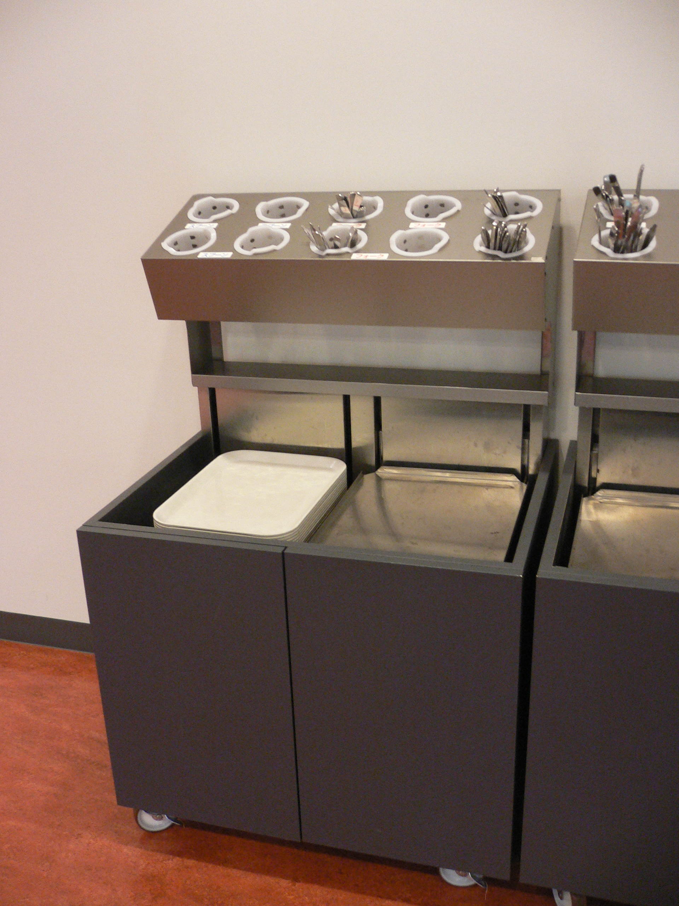
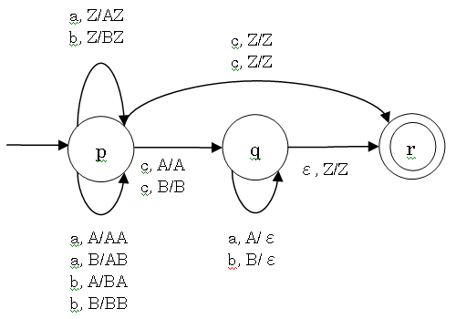

言
語理論とコン
パイラ
第
六回:
文脈自由言語と構文解析
2005
年 5月 27日

© 2005
Martin
J. Dürst 青山学院大学
先週の試験: 第四問
次の表の左側の正規表現で定義されている言語に表の最上列の語が含ま
れている場合に○、含まれていない場合に×を書け。
|
abc |
ac |
abccc |
acbc |
abcbc |
cba |
a(b|c) |
× |
○ |
× |
× |
× |
× |
a(bc)* |
○ |
× |
× |
× |
○ |
× |
abc* |
○ |
× |
○ |
× |
× |
× |
正規表現の復習
- 一般の文字は自分を表す
- 横並びは続きを表す
- | は選択を表す
- * は 0 以上の繰り返しを表す
- () は組み合わせを明解にする
- 優先順位は高い方から *, 横並び、|
正規表現の例
- efg: efg
- e*fg: fg, efg, eefg,
eeefg,...
- ef*g: eg, efg, effg, efffg,
effffg,...
- e(fg)*: e, efg, efgfg,
efgfgfg,...
- e|f|g: e, f, g
- ef|g: ef, g
- e(f|g): ef, eg
- e(f|g)*: e, ef, eg, eff,
efg, egf, egg, efff, effg,...
- e|(fg)*: e, fg, fgfg,
fgfgfg,...
- e|(f|g)*: e, f, g, ff, fg,
gf, gg
文法と正規表現の違い
文法:
- 複数の規則
- 非終端記号、左から右へ導出
- *, (), | は純粋な場合には使わない
正規表現:
- 一つの規則だけ
- 非終端記号なし、「右側」だけ
- *, (), | 以外も実用的な物にはもっと機能がある
正規表現の (簡単な) 規則は文法の (複雑な)
規則一つに相当する
コンパイラの段階
字句解析 (lexical analysis)
構文解析 (parsing; syntax analysis)
意味解析 (semantic analysis)
最適化 (optimization)
コード生成 (code generation)
形式言語の表
| 文法 |
grammar |
Type |
言語 |
オートマトン |
| 句構造文法 |
phrase structure grammar
(psg) |
0 |
句構造言語 |
チューリング機械 |
| 文脈依存文法 |
context-sensitive
grammar (csg) |
1 |
文脈依存言語 |
線形拘束オートマトン |
| 文脈自由文法 |
context-free grammar
(cfg) |
2 |
文脈自由言語 |
プッシュダウンオートマトン |
| 正規文法 |
regular grammar (rg) |
3 |
正規言語 |
有限オートマトン |
字句解析と構文解析
|
字句解析 |
構文解析 |
| 解析対象 |
定数、識別子、予約語、演算子など |
式、文、関数など |
| 要点 |
速さ |
能力 |
| 記述方法 |
正規表現 |
文脈自由文法 |
| (自動) 解析手段 |
有限オートマトン |
プッシュダウンオートマトン |
正規文法と文脈自由文法
正規文法:
- 右線形文法か左線形文法
- 訂正: A → aB は右線
形、A → Ba は左線
形
文脈自由文法:
- 文法の導出規則の左側は全て非終端記号一つ
- 例: A → aBb, B → aaB, S →
aBaAb 等
- ｢自由」の意味: 依存しない、左右されない、関係ない
- プログラム言語の構文は周りが関係なくてその場で正しいかどう
か判断できる
- 意味解析も含まれると文脈自由がなくなる
文脈自由文法の一例
S → aSa | bSb | c
生成する言語: 真ん中に c が一個、周りに a と b が
0
以上対照的に自由な順番に並ぶ
生成する語の例: c, aca, bcb,
abaabcbaaba 等
こういう風な言語を受理するのはメモリがないため有限オートマトンで
は不可能
オートマトンの機能拡張が必要
オートマトンにプッシュダウンスタックをつけよう
プッシュダウンスタック
- 受理する言語の記号と別のプッシュダウン記号を記憶できる
- 一番上の記号しか見えない
- 一番下に特別な記号 (ボトムマーカ) がある

プッシュダウンオートマトン
- 遷移は入力記号だけではなくて、スタックの上に見える記号にも
依存する
- 遷移でのスタックについての動作:
一番上のスタック記号を取るか、スタックをそのまま残すか、スタックに記号を追加するのか
- 読み込みはボトムマーカだけのスタックから始まる
- 受理はボトムマーカだけのスタックで可能
プッシュダウンオートマトンの一例
- a, b, c は言語の記号
- スタックは左が上で想定されている
- A/BA はスタックの一番上が A の場合に BA
に変わる (つまり、B が上乗せ)

決定性と非決定性のプッシュダウンオートマトン
- S → aSa | bSb | c
の文法の場合には決定性プッシュダウンオートマトンで実現できました
- S → aSa | bSb | ε
の文法の場合には決定性プッシュダウンオートマトンで実現できません。なぜかというと語の真ん中の印がない。
- 有限オートマトンと違って、決定性と非決定性のプッシュダウン
プッシュダウンの性能 (受理能力) が違う
- 効率よく構文解析できるには可能な限り決定性のある文法が必要